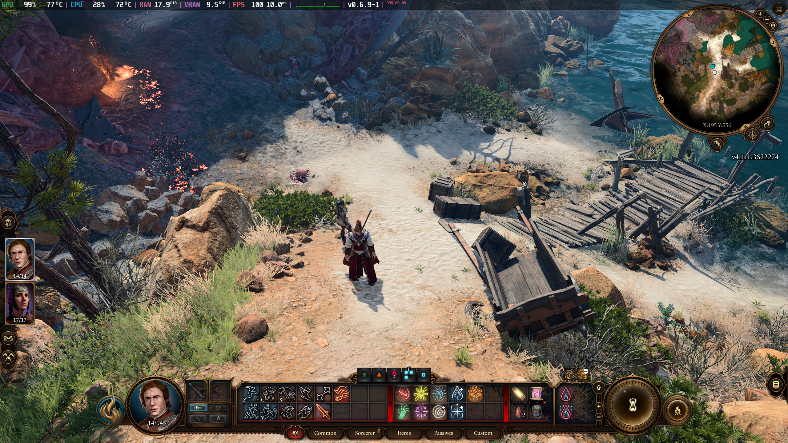
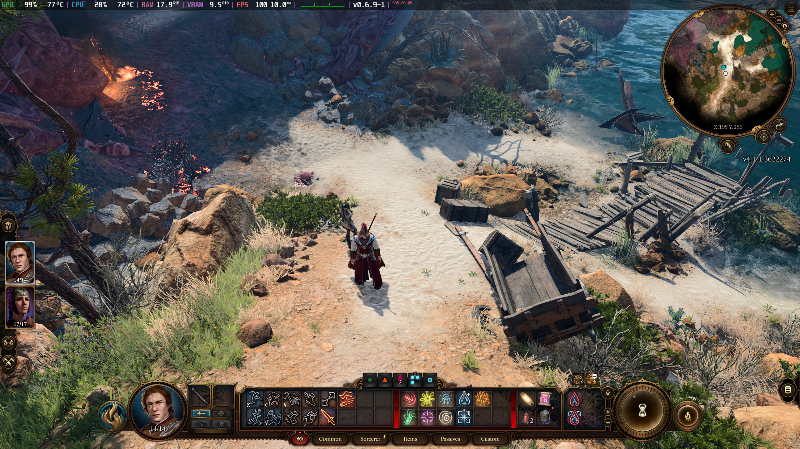

Zindanlar ve Ejderhalar Oyuncunun El Kitabı'ndaki 12 sınıf ve 11 ırktan birer tanesini seçip kendi kimliğinizi yaratın ya da çok iyi hazırlanmış bir geçmişe sahip Başlangıç karakterlerinden biriyle oynayın. Ya da kendi mekaniklerine ve hikâyesine sahip, tamamıyla özelleştirilebilir bir karakter olan Kara Dürtü ile oynayıp içinizdeki yozlaşmayla mücadele edin. Kimi seçerseniz seçin Unutulmuş Diyarlar'da ve ötesinde macera, yağma, savaş ve aşkla dolu bir yolda yürüyeceksiniz. Partinizi toplayın. Dört kişiye kadar oynayabileceğiniz çevirim içi maceranın tadını çıkarın.
Kaçırılmışsın, enfekte olmuşsun ve kayıpsın. Bir canavara dönüşüyorsun ama içindeki yozlaşma büyürken gücün de büyüyor. Bu güç, hayatta kalmanı sağlayabilir ama bunun bir bedeli olacaktır. En büyük kuvvetin ise yeteneklerin değil, parti arkadaşlarınla aranda kurduğun güven bağıdır. Şeytanlarla, ilahlarla ve diğer kötücül güçlerle kendini bir çatışmada buluyorsun ve Unutulmuş Diyarlar'ın kaderine sen karar vereceksin.
Yeni Divinity 4.0 motoruyla yaratılan Baldur's Gate 3, size eşi benzeri görülmemiş bir keşif ve deney özgürlüğü ile karakterlerle, tehlikelerle ve aldatmacalarla dolu heyecan verici bir dünyayla etkileşime geçmenize olanak tanıyor. Muhteşem bir sinematik anlatımla kendinizi karakterinize daha yakın hissedeceksiniz. Gölgelanetli ormanlardan ve Karanlıkaltı'nın büyülü mağaralarından kaotik Baldur Geçidi şehrine kadar aldığınız aksiyonlar maceranızı belirlese de kaderinizi belirleyecek olan seçimleriniz olacak; hafızalardan silinmeyeceksiniz.
Unutulmuş Diyarlar devasa, oldukça detaylı ve her konuda bol çeşide sahip bir dünya. Etrafınızda keşfedilmeyi bekleyen sırlar olacak; keşfinizin en önemli kısmı ise dikeylik olacak. Karanlıkaltı'nın derinliklerinden Baldur Geçidi'nin parlak çatılarına doğru yolculuğunuzda gizlenin, batırın, itin, tırmanın ve sıçrayın. Yaptığınız her seçim maceranızı ilerletecek, her kararınız dünya üstünde bir iz bırakacak. Mirasınızı oluşturun, ilişkilerinizi geliştirin, düşman edinin ve problemleri kendi yönteminizle çözün. Hiçbir oyununuz birbirine benzemeyecek.
Dört oyuncuya kadar çevrim içi çok oyunculu deneyim. Eşi benzeri görülmemiş genişlik ve derinlik.
11 ırktan (İnsan, Githyanki, Yarı-Ork, Cüce, Elf, Drow, Tiefling, Buçukluk, Yarı-Elf, Gnom, Ejderdoğan) 31 alt ırk ve 12 sınıftan 36 alt sınıf mevcut. Keşfin ödüllendirildiği ve oyuncunun yolculuğun gidişatını belirlediği bu el yapımı dünyada 600'den fazla büyü ve aksiyon neredeyse sınırsız bir etkileşim özgürlüğü sunuyor. Eşsiz Karakter Yaratıcımız eşi benzeri görülmemiş bir karakter derinliği sunarken kim olursanız olun 12. Seviyeye kadar arkanızda benzersiz bir miras bırakmanızı sağlıyor. Her ne karar verirseniz verin 174 saatten uzun sinematik deneyim de arkanızdan gelecek; her yeni oyun yeni bir sinematik macera demek.